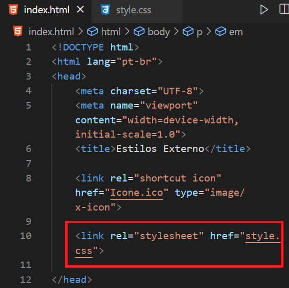

Desta forma, criamos um arquivo separado apenas para o CSS, deixando nosso código mais limpo e também aplicando a personalização em várias páginas de forma mais fácil. Clique a baixo para ver alguns exemplos:
Os estilos externos são recomendados para sites com muita customização ou/e muitas páginas.
**OBS: Nada impede que possamos usar vários estilos diferentes no mesmo site, apenas é recomendado evitar o estilo Inline e utilizalo apenas em casos de custumização extremamente precisa, que afetaria apenas uma linha ou tag do código.